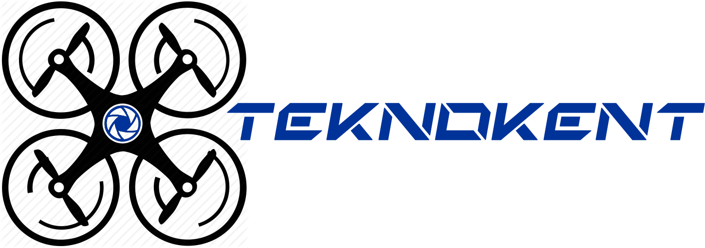

|  |
GİZLİLİK ŞARTLAR
teknokent.com.tr web sitesi ve teknokent Dergi içerisinde yer alan içerik, görsel ve işitsel unsurlar ve bunların düzenlenmeleri üzerindeki her türlü fikri ve sınai mülkiyet hakkı, aksi açıkça belirtilmediği sürece İ.Z. Medya aittir. Bilgiler, İ.Z. Medya’nın yazılı izni olmaksızın dağıtılamaz, kiralanamaz, çoğaltılamaz, değiştirilemez, ticari bir amaçla kullanılamaz. Ancak kaynak gösterilerek alıntı yapılabilir.
İ.Z. Medya, hiçbir koşulda, İçerikte olabilecek hata veya eksiklikler veya web sitesinde bulunan içeriğin kullanımından kaynaklanabilecek herhangi bir kayıp veya hasar dahil, fakat bunlarla kısıtlı olmamak kaydıyla, içerikten ve ziyaretçi tarafından sunulan yanlış bilgiden sorumlu tutulamaz.
teknokent.com.tr web sitemizde, kendisinin veya üçüncü kişilerin hizmetleri hakkında reklam ve promosyonlar görüntülenebilir. Web sitemizde İ.Z. Medya’ya ait olmayan ve faaliyetleriyle ilgili bulunmayan diğer web sitelerine yönlendirme yapılabilir. Ziyaretçinin bu web sitelerinden herhangi birini ziyaret etmesi halinde üçüncü kişilerin kullanımında ve aitliğinde olan bu web sitelerinin politika ve uygulamalarından İ.Z. Medya sorumlu değildir.
teknokent.com.tr internet sitesinde verilen bilgiler ve teknokent Dergi içeriği, “olduğu gibi”, “mevcut olduğu şekilde” sağlanmaktadırlar. İ.Z. Medya, ziyaretçiye, üçüncü kişiler hakkında olanlar da dahil web sitesinde yer alan bilgilerle da dahil olarak mülkiyet, satılabilirlik, doğruluk, güvenilirlik, kesinlik, belirli bir amaç için uygunluk ve/veya bilgisayar virüsü bulunmamasına ilişkin garantiler dahil ancak bunlarla sınırlı kalmamak kaydıyla, zımnen, açıkça ya da yasal olarak hiçbir garanti vermemektedir.
teknokent.com.tr sitesi ve teknokent Dergi’nin kullanımı sırasında veya sonrasında oluşabilecek herhangi bir performans arızası, hata, eksiklik, kesinti, kusur, işletme ve/veya nakilde gecikme, bilgisayar virüsü ve/veya hat ve/veya sistem arızası sonucu ortaya çıkan doğrudan ya da dolaylı ortaya çıkan zarar, ziyan ve masraflar dâhil ancak bunlarla sınırlı olmamak üzere hiçbir zarar ve ziyandan, İ.Z. Medya ve/veya çalışanları, bu tür bir zarar ve ziyan olasılığından haberdar edilmiş olsalar dahi, sorumlu olmazlar.
İ.Z. Medya, teknokent.com.tr İnternet sitesinde ve teknokent Dergi’de yer alan bütün ürün ve hizmetleri, sayfaları, bilgileri, görsel unsurları, içeriği önceden bildirimde bulunmadan değiştirme hakkını saklı tutar.